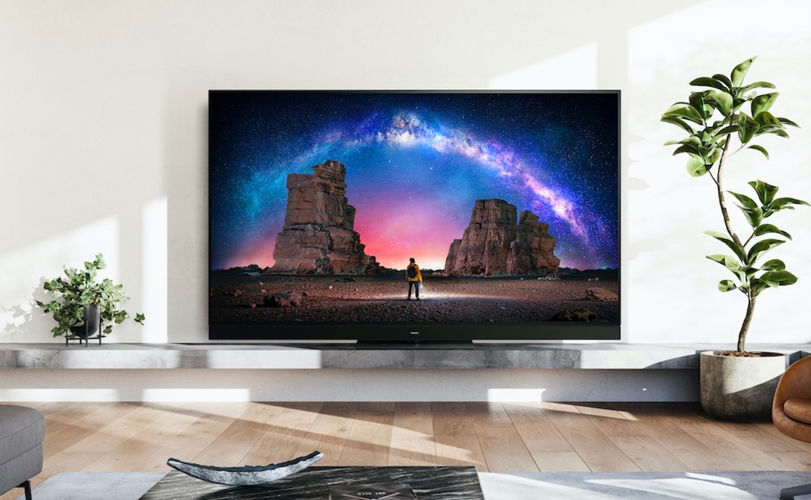

Der LG OLED G3 überzeugt durch herausragende Bildqualität dank OLED-Technologie, die perfekte Schwarzwerte und lebendige Farben liefert...

Der Panasonic MZW 2004 gilt zweifellos als einer der besten Fernseher und verdient den Titel des zweitbesten aufgrund seiner beeindruckenden Bildqualität durch OLED-Technologie, hochwertigen Sound, eleganten Design und hochwertigen Verarbeitung...

Der Sony A95l verdient den Titel des drittbesten Fernsehers aufgrund seiner herausragenden Bild- und Soundqualität dank innovativer OLED-Technologie. Sein elegantes Design mit einem minimalistischen Rahmen fügt sich perfekt in jedes Wohnzimmer ein...